Lumia
An IOS puzzle platformer game
Cornell Univeristy (INFO 4152 - Advanced Game Design)

Team Members
Xirui He, Benjamin Dacek, Will Wang, Yue (Olivia) Li, Yuwei (Vivi) Ye, Junhan (Julia) Zeng, Yiwei Xue, Arthur Yang
Big Picture
Lumia, a luminescent organism, has discovered an abandoned planet once home to a ruined civilization. Travelling through the ruins, Lumia leaves a part of its body inside each magical plant it encounters to bring back light - and with it, life.
Design Process
Forming the game concept
First, we anchored the game to be a strategic puzzle platformer game after many rounds of brainstorming the game concept and story line. We drew inspiration from existing games in the market, such as Ordia, but we also focused on creating our unique artistic style that may interest our target audience. Before we go into the details about game mechanics and controls, we want to have a solid game concept to narrow down the scope. Because of time constraints, we only focused on the IOS platform.
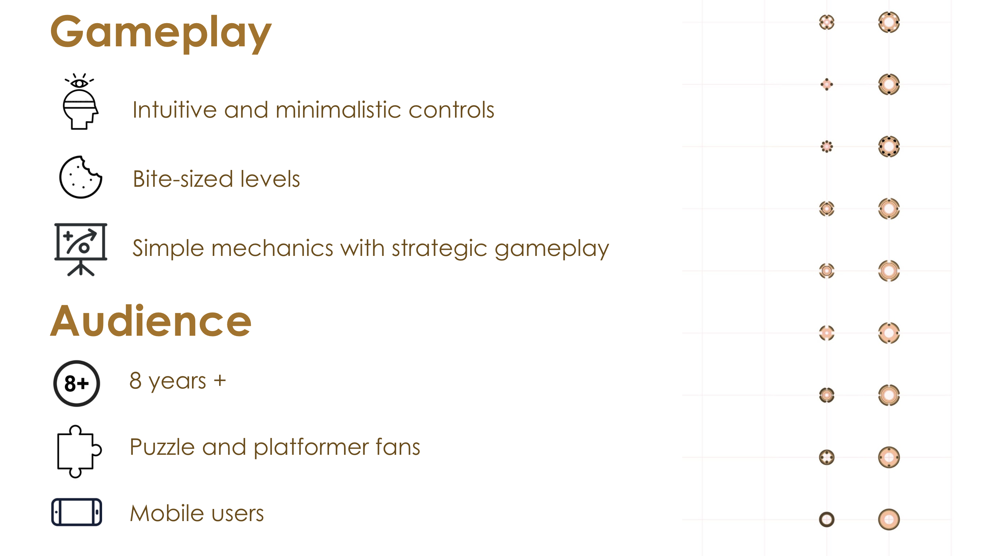
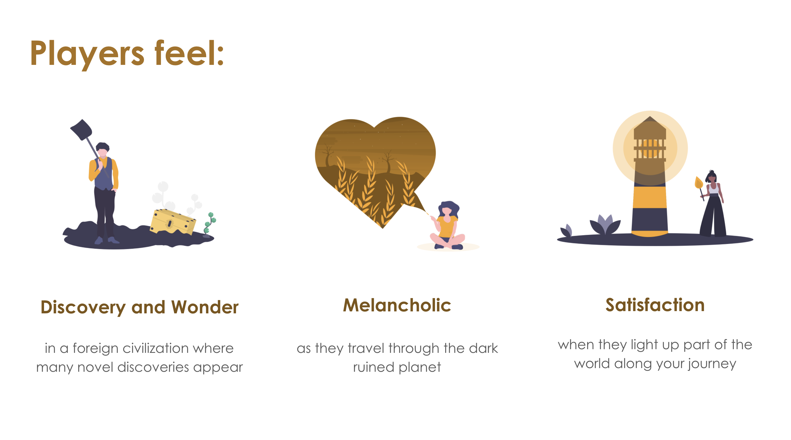
Competitive analysis
We chose 3 games as our competitors - Ordia, Locoroco, and Night Sky. All 3 games are platformer games, but with different artistic styles. In Lumia, we want to create a fresh gameplay experience compared to traditional platformer games by focusing mainly on puzzle solving in a darker and somber atmosphere.
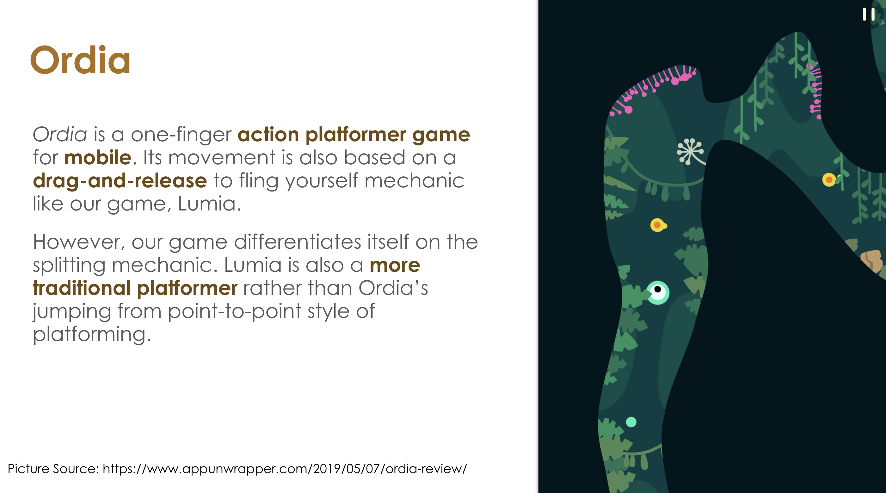
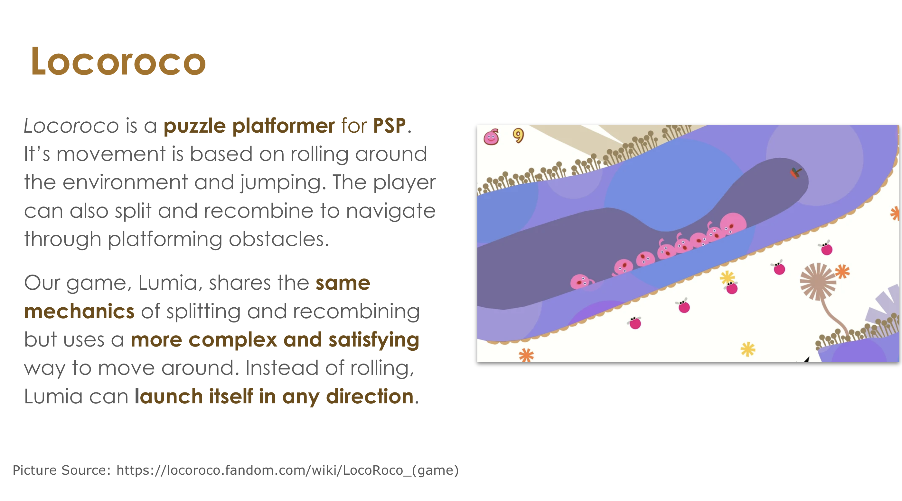
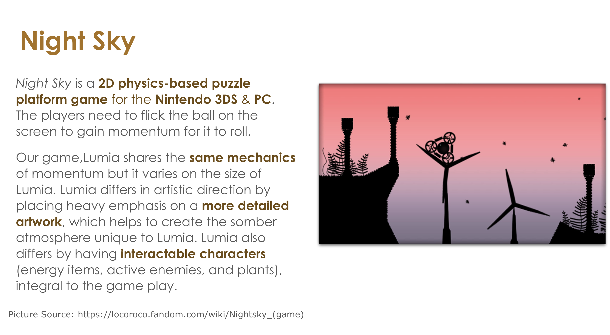
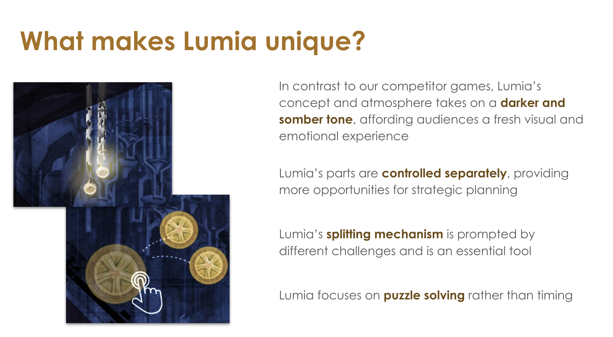
Nondigital prototype
To test out our game idea, we created a nondigital prototype of the game on Figma. We included all the basic gameplay elements on the Figma frame, such as Lumia, energy items, and enemies, so that we can mock the gameplay experience by moving the items around or taking items out of the frame.

Design philosophy
Players will be challenged by a mixture of puzzle and platforming challenges that evoke players’ satisfaction upon beating the level and lighting up all the magical plants. There should be a strong sense of visual progress throughout the game as the environment gets gradually lit up with Lumia as the source of light. To solve all the puzzle and platforming challenges, players will also have to make extensive use of all of Lumia’s toolkit (splitting, rejoining, and switching bodies), and no part of Lumia’s toolkit should be neglected in our level designs.
Goal #1 create strategic and intuitive gameplay for casual mobile players
Goal #2 have an art style that brings players a sense of wonder and discovery
Goal #3 create levels that are replayable with many possible solutions
Visual design specification
In addition to specifying the core gameplay elements and interactions, we also created the visual design specification which includes a mood board for the game's art style, inspirations for the game music, tiles and character design, and a UI style guide.
Environmental mood keyword: adventurous, mystical, otherworldly, deserted
Character mood keyword: ethereal, magical, captivated
The overall color palette emphasizes the mystical and deserted sentiments of the game. The environments will mostly be dark blue and dark brown. Characters like Lumia will have bright accent colors, such as gold and magenta, in order to contrast with gloomy backgrounds.
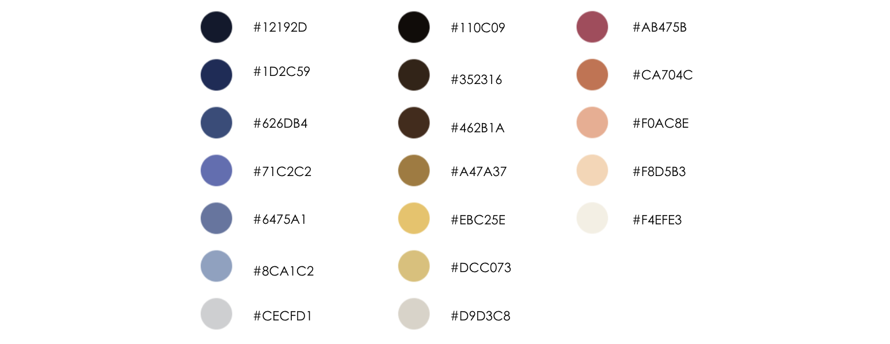
Lines in this game are used more as a constructive element than outlines of objects. Characters like Lumia will be created from a set of vector lines and rules using 3D modeling software Rhino and its algorithm editor Grasshopper. The boundary circle and the core circle of Lumia are connected with hairlines ranging from 0 to 0.8mm.
Since the characters are gaseous, the animation of characters should convey a sense of elegance. Animations will be smooth but not very fast as we aim to imitate the weightless feeling in the outer space.
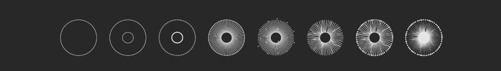
To distinguish tiles from intricate backgrounds, our tile design has been aiming for a simplistic, clean look, but we also chose a bright color to let it stand out from the background. Below, there is a complete set of art asset we use in the game.

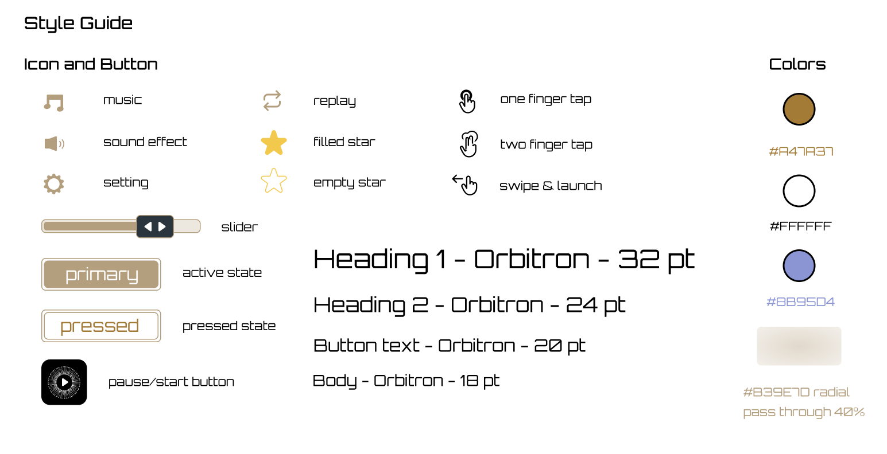
Finalized UI Screens
When the user opens the game they are greeted with a welcoming text introducing who Lumia is and the setting of the game when the game is loading. After the game is loaded, the player will see the main screen with simply the play button on the bottom. Tapping into the game, they will see the level select screen where they can tap and enter the first level.

In the gameplay screen, players can pause, or go into the panning mode which allows them to find splitted Lumia bodies that are off the current screen. When players sucessfully completes a level, they will see their score in 3-star rating after a short transition screen. They will also see how many lights Lumia has remaining after lighting up all the lights. From this screen, they can go back to level select, replay the game, or continue to the next level.

We also created a tutorial level as level 1 to help guide players through the level and help them recognize all gameplay elements.
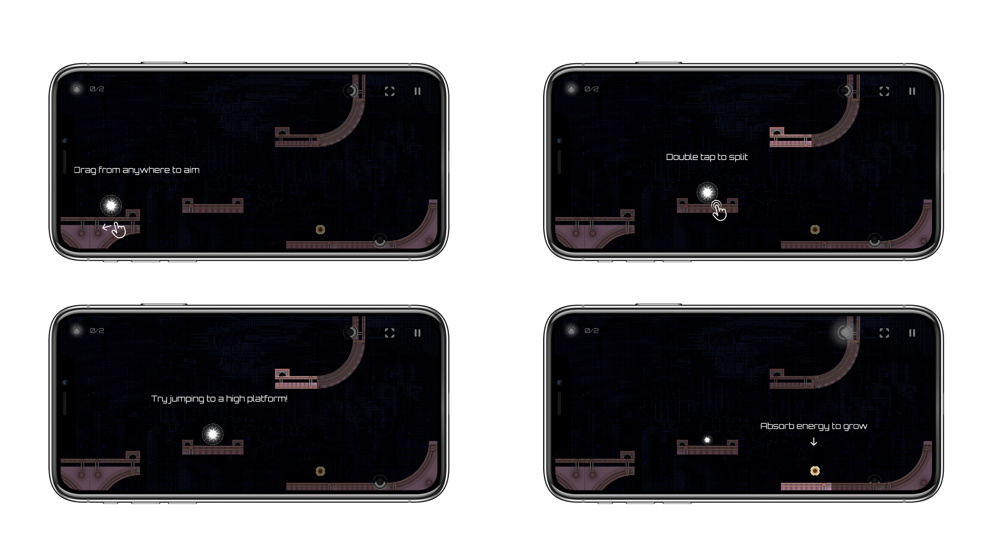Before vs. After
After creating the first set of prototypes, we conducted game testing with approximately 50 players. Based on game testing feedback and advice from our peers, we made the following design changes to finalize the prototype after many iterations: 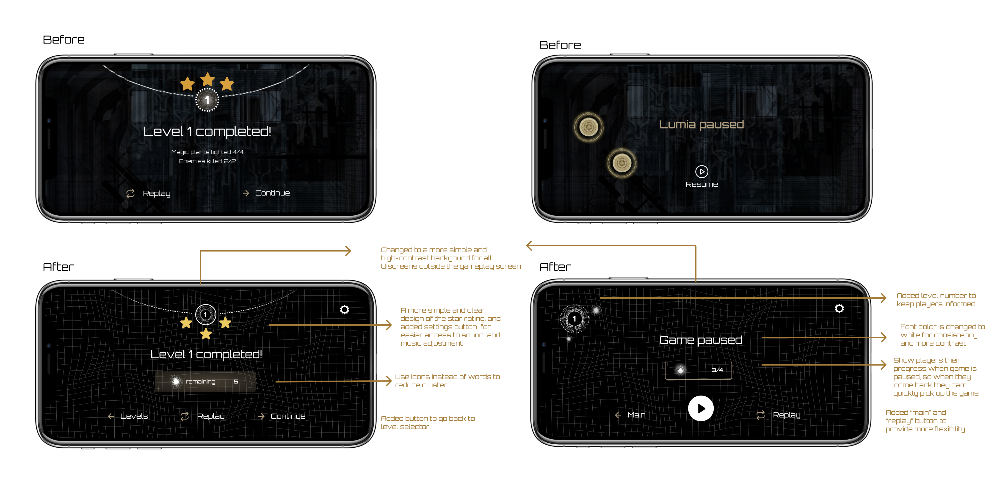
Based on the game testing feedback, we also made other important changes to the game in addition to UI design. We kept tuning the game physics to give players the perfect game mechanics, and created more reasonable and replayable level design. As the UI designer for the game, I will keep the other components short and focus mainly on the design :)
Next Steps
Design
One of the biggest next steps is to improve interactivity of the game by creating more animations.
Programming
The most important next step on the programming side is to continue bug fixing to reduce app crashes as much as possible. We can also work on putting the game on Android in addition to IOS platform, so that we can reach more mobile players.
Product Promotion
Out team created an app store proposal to release the game on IOS apple store. Currently players can download Lumia on Testflight, the next step would be releasing it on app store, so that we can improve the game by collecting more data from ratings and reviews.
Back to Projects
© 2020 Xirui He
© 2020 Xirui He